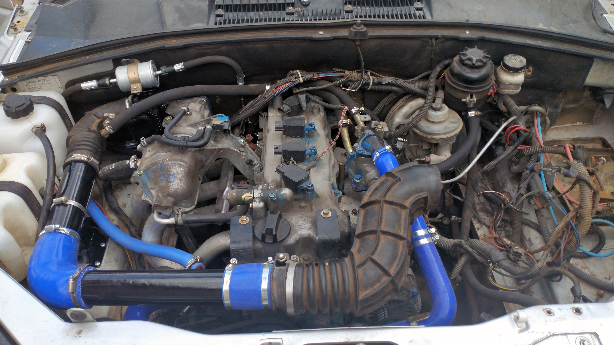
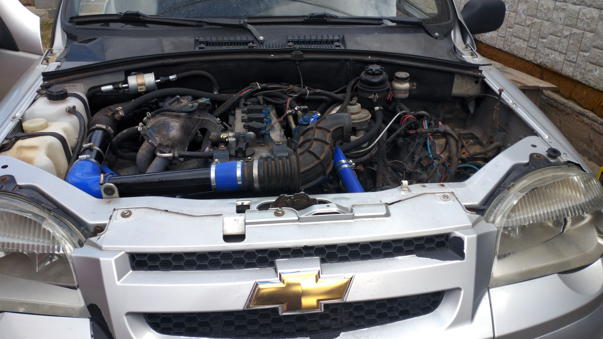
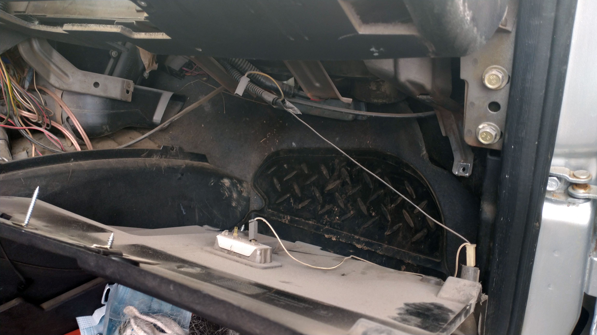
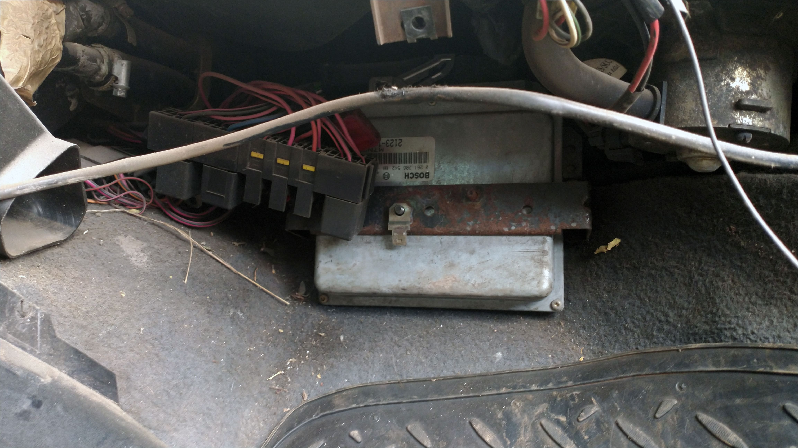
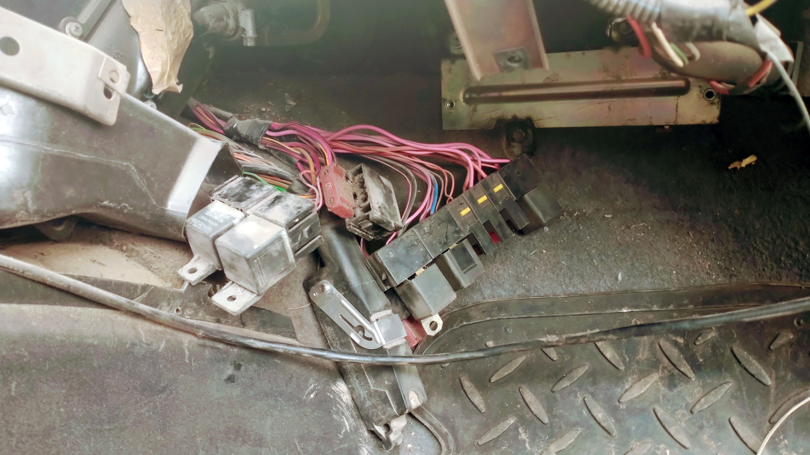
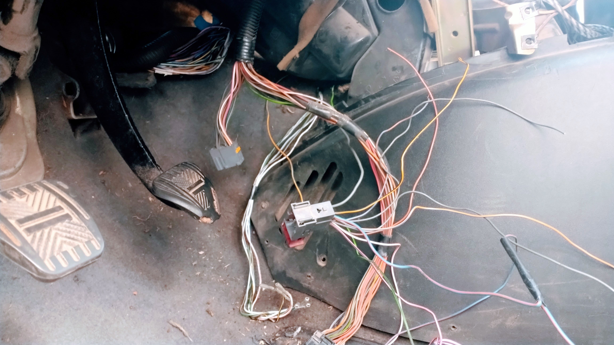
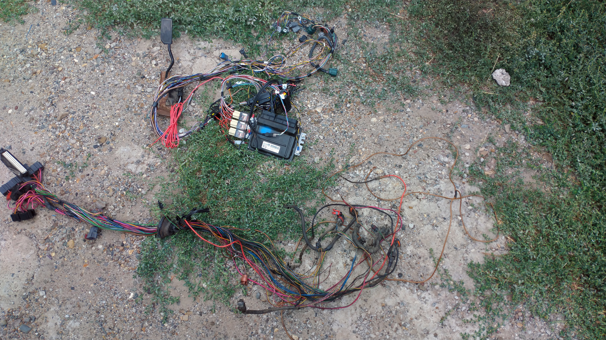
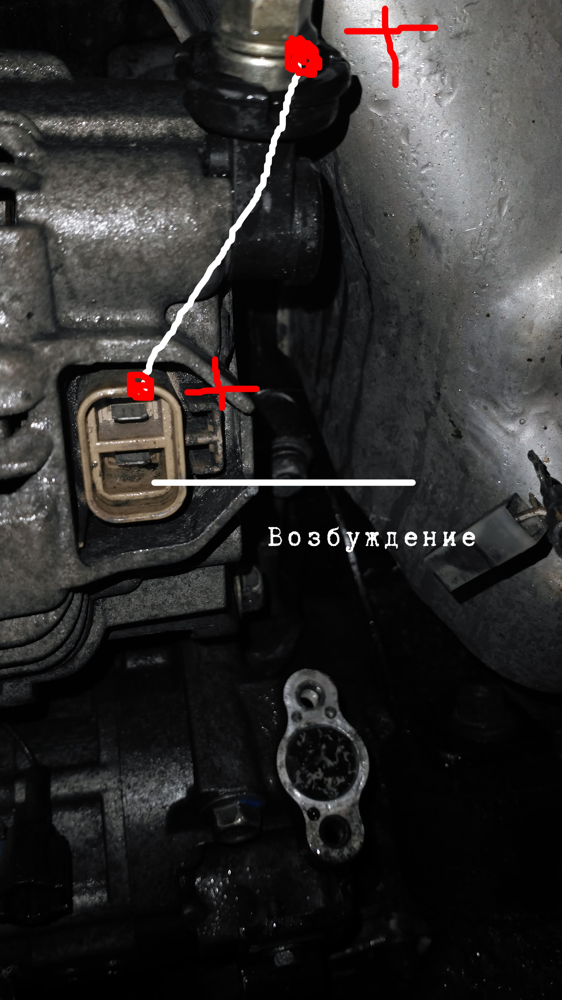
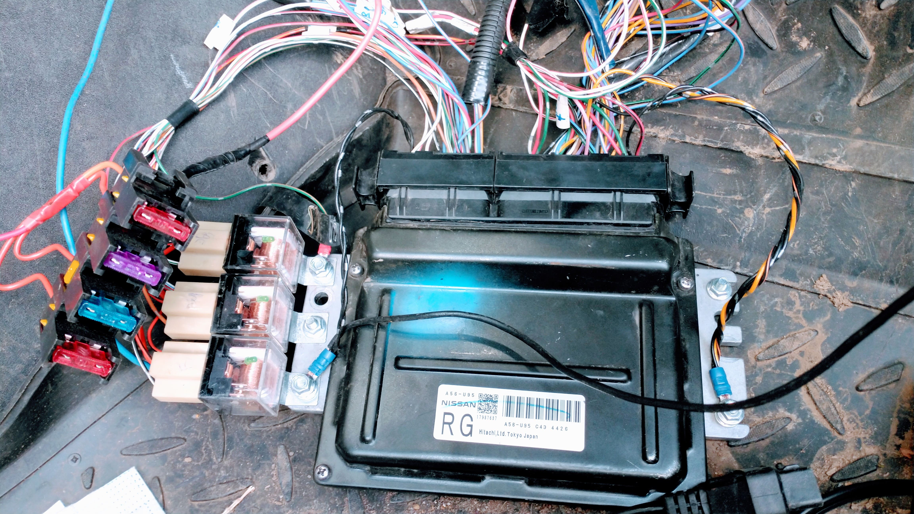
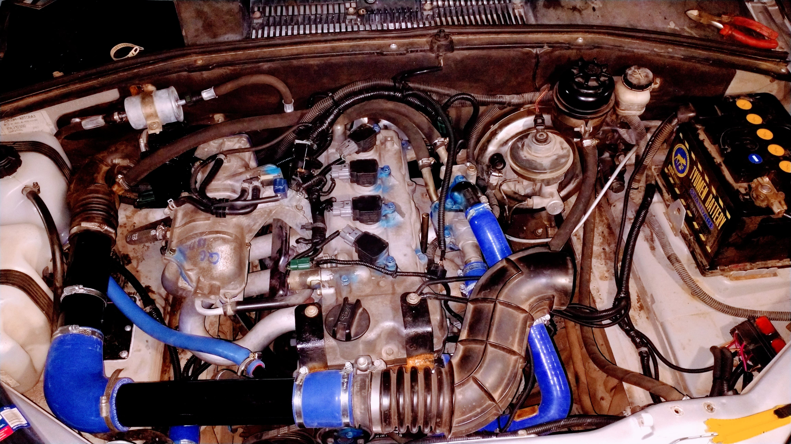

Swap двигателя Chevrolet Niva
Дата: 13.09.2021
Предыстория.
Человеку попался мотор от nissan премьера 2004 года QG18 в дар от знакомых .Родной мотор решили снять из за жора масла. Вопросы по маханическим подгонкам хозяин Нивы взял на себя вместе с помощником, так как оба хорошие сварщики. Пришлось им повозиться около недели, чтобы двигатель встал как родной и срастить его с вазовоской КПП.

Кроме того, задача была еще и уместить всё это в подкапотном пространстве, так как Ниссановский мотор немного отличался по габаритам . Например дроссельный узел совсем не влазил, а так же и воздушный фильтр и все гофры , идущие к нему.

Датчик фаз тоже упирался в переднюю перегородку между моторным отсеком и салоном. В итоге , полностью собранная конструкция нуждалась в правильном подключении электрики , то есть нужно было срастить родную косу от Нивы с косой от Ниссан. Поэтому этот авто пригнали к нам.
Приступаем к работе.
Естесственно , весь моторный жгут вместе с ЭБУ от Ниссана был тоже предоставлен нам хозяином. Жгут был полностью подготовлен и подписан каждый проводок продавцами. Теперь нужно удалить весь старый жгут из салона. Делается это довольно недолго и не особо тяжело. Отключаем все фишки под мотором, выдавливаем резинку между отсеком двигателя и салоном и вытягиваем всю косу в салон. Бардачок снять для доступа у ЭБУ.


Затем демонтируем ЭБУ и всё полностью выкидываем. Оставляем только жгут, идущий под приборную панель.
В нём есть всё необходимое, чтобы приборная панель работала от ЭБУ Nissan.


Теперь подготавливаем косу от Nissan , а для этого нужно примерить каждый провод, идущий к датчикам и потом уже заправить это всё в новые гофрочки и замотать изолентой.

Подготовка занимает примерно часа три и теперь новый жгут собран и готов к установке. Но параллельно еще прикрутили провода на стартер и продумали схему подключения генератора, так как он незначительно отличался по подключению от Вазовского. Схематично это выглядит так.

На следующем шаге мы протягиваем собранную косу в салон и сращиваем её с колодкой, идущей от панели приборов.

Тут нам нужно подключить провода от сигнала датчика давления, сигнал оборотов спидометра, датчик температуры , уровень топлива и спидометр. Казалось бы на первый взгляд задача легкая, однако ЭБУ у Ниссан сигналы передает по CAN шине, а вот у Нивы по K-Line от Bosch MP7.0. Также нужно сделать сигнал на включение вентиляторов.
Сперва о уровне топлива. Тут оказалось все просто. Провода шли прямо на приборку. Сигнал получен. Затем тахометр. И тут нас постигла неудача. Дело в том, что сигнал тахометра у Ниссан берется из отдельного блока кузовной электроники и напрямую никак не вывести это на приборку. Нашли лазейку на 103 контакте ЭБУ идет сигнал о вращении двигателем , приходящем на АКПП. Но, сигнал не усиленный и тахометр естесственно не реагировал. Пришлось собрать элементарную схемку на диоде и резисторе, и вуаля усиленный сигнал очень точно отрабатывал стрелкой тахометра.
Время пришло вывести температуру двигателя на приборку, но тут опять засада. Все штатные сигналы в Ниссан передаются по CAN шине на приборную панель от ЭБУ. Пришлось немного поколхозить, взяв старый Вазовский ДМРВ, в котором есть датчик температуры и в гофре вывести по проводам в двигатель, посадив на герметик возле термостата. Теперь анлоговый сигнал с этого датчика показывает точную температуру.
С датчиком давления масла не возникло никаких трудностей, так выход с ЭБУ для него отделно имеется, оставалось только срастить.
Постараться нужно было и с вентиляторами охлаждения радиаторов, ведь управляющего выхода так же нет у Ниссановского ЭБУ. Пришлось взять датчик температуры от ГАЗ и вмонтировать его прямо в магистраль около термостата. Датчик работает так- при достижении температуры в 99 градусов, цепь датчика замыкается, тем самым массовый сигнал идет на реле вентиляторов охлаждения, тем самым последние начинают вращатся с максимальной скоростью.

На этом всё , теперь автомобиль радует своего владельца более мощным и надежным мотором с объемом 1.8 литра.